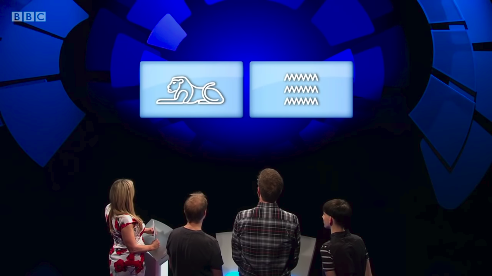
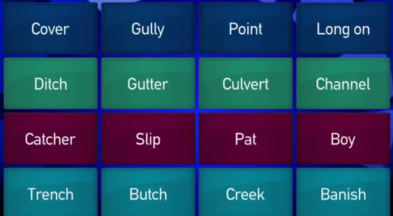

Balls to the Connecting Wall
I'm a huge fan of quiz shows, and in particular the BBC show Only Connect. I've always wanted to see if I could hold my own against the teams at the "Connecting Wall", and have since found an online game here inspired by the show, however I wanted to try this out with real walls from the show.

Inspired another blog post which scraped YouTube video subtitles for University Challenge questions, I decided that it probably wouldn't be too difficult to put together an automated way of grabbing walls from Only Connect videos.
However I was soon left scratching my head. Ideally I wanted to extract frames from the YouTube video, at the exact moment the solved connecting wall was in frame. In the recent series the graphics haven't changed, and so the positioning of it remains stationary - however the time at which it appears is completely variable.
I realised that Victoria Coren Mitchell says certain things when the wall has been solved/the time limit is up: "you've solved the wall", or "what about the green group" or "let's resolve the wall" being some of them.
So if I had a way to find out when these things were said, the search space of finding the frames that contain the wall would be tightened - and this is where subtitles come in!
With some help from some code I found on Github it turns out the manually written / auto-generated subtitle files are rather easy to download from YouTube videos in very few lines of Python.
And with some processing you can get to a list of pairs like this:
("'00:22:11.970 --> 00:22:11.980", "and a half minutes solve the water wall'")
Then it's a matter of finding the pairs that have some meaningful information in. I found that the following searching method produced some good timestamps, although it's fairly naive.
#phrase check for subs that would suggest a solved wall
def solved_wall(sub):
return any(word in sub[1] for word in ["group", "resolve"])
#timestamps at which the connecting wall may be on screen
wall_times = [sub[0] for sub in subs if solved_wall(sub)]
After this these timestamps can be turned into real numbers, and then plugged into code that can grab frames from a YouTube video at that time. This is also a fairly trivial task that can be solved using the Python libraries pafy and cv2, instead of having to download the entire video.
#load the youtube video into a video capture
vpafy = pafy.new(url)
play = vpafy.getbestvideo(preftype="mp4")
vidcap = cv2.VideoCapture(play.url)
#iterate through timestamps in order, if you find a wall add to list
for t in sorted(timestamps):
#grab image at timestamp t
vidcap.set(cv2.CAP_PROP_POS_MSEC, (t*1000))
success, image = vidcap.read()
After this we crop to the dimensions of a wall in the shot, and then we (maybe) have a cropped wall image.

But what makes a wall a wall?
At first I was wondering if I'd need some sort of complex computer vision algorithm to determine if the cropped shot is a wall, but it can be done in a far easier way.
The colouring of a solved wall as shown here is another constant of the show, so if we
take the average colour of the first column, we can test the average colour of that area
of found shots againsts it. Using euclidean distance between our average_wall_colour and
average_found_colour and a threshold value, we can come up with an estimation of
whether a frame contains a wall or not.
And that's more or less it!
After this I extracted the first and last known wall images (hoping that they
were the solved lion and water walls) and from here all that needs doing is using
OCR to extract the text from walls. I like pytesseract although this can be a little
temperamental sometimes. To combat this the images were preprocessed to be black
text on a white background (using PIL) which made OCR accuracy far higher.
Now let's resolve the wall!
Cover, Gully, Point, Long on
Ditch, Gutter, Culvert, Channel
Catcher, Slip, Pat, Boy
Trench, Butch, Creek, Banish